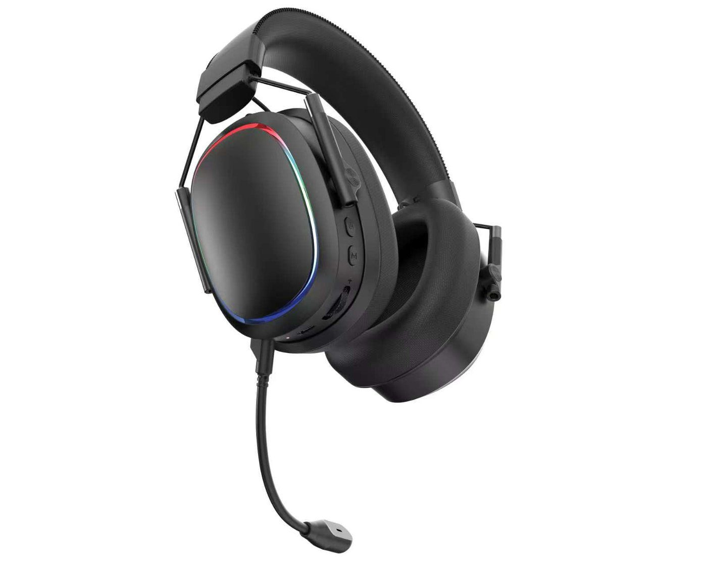

Wired headset direction
Review the actual playback and microphone connectors, cable set and any splitter need. Do not assume that a listed USB plug carries audio.
For distributors
What does each model add to your range? Separate wired, receiver-based and tri-mode roles, then agree the receiver, cable set and sample version for each SKU. Keep the same approval notes when discussing a repeat order.

Range planning
Start with a focused model shortlist. Compare the same requirements across the range rather than assigning a price tier from the appearance alone.
Shortlist examples
Review the actual playback and microphone connectors, cable set and any splitter need. Do not assume that a listed USB plug carries audio.
Use the 2.4GHz model page to review the headset, receiver, detachable microphone and listed configuration before choosing a sample.
Compare the documented 2.4GHz, Bluetooth and wired direction. Check mode switching, the cable and receiver set, and microphone behavior on the selected version.
Keep the model, quantity, branding, packing, sample and delivery scope together. Different connection roles are not evidence of a particular wholesale price.
Repeat orders
A repeated model code does not by itself confirm that the component, accessory or packing configuration is unchanged.
For shipment and document preparation, use the importer workflow. For product images and claims, use the online listing checks.
Start with products
Product FAQ
Do not assume so. Ask for the quantity, configuration, branding, packing, sample terms and delivery scope for each selected model. A quotation for one SKU does not establish the terms for the whole assortment.
Use G935 as a receiver-based 2.4GHz reference and G938 as a tri-mode reference. Compare the target devices, microphone use, controls and accessory set on the selected samples. Their different connection roles do not by themselves establish price tiers or a quality ranking.
Refer to the approved sample and version, then reconfirm the specification, receiver or cable, microphone, colors, artwork, packing list and any changes. Ask for current availability, quotation and timing; the previous model code alone does not confirm an unchanged configuration.
Send the destination market, sales channel, intended role of each model, target devices and quantity per SKU. Include sample references, branding, packing, document questions and required timing so that each model can be quoted against a clear scope.
Share the target market and devices, each model's role and quantity, sample references, branding, packing and requested timing. Keep the requirements separate for each SKU.